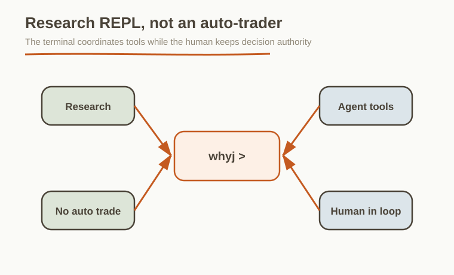
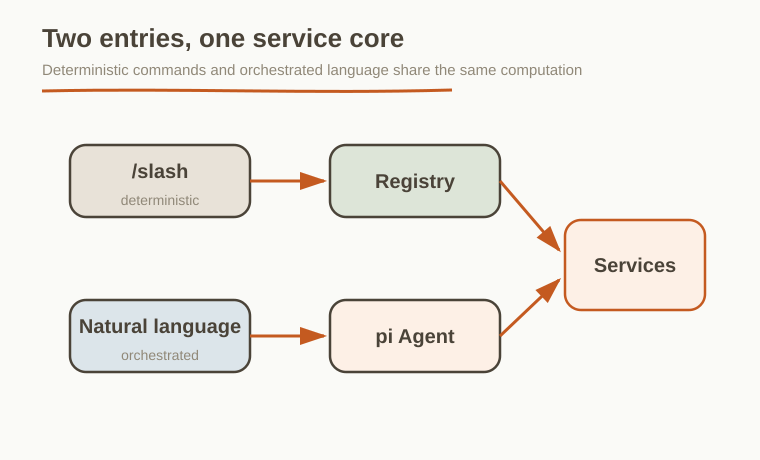
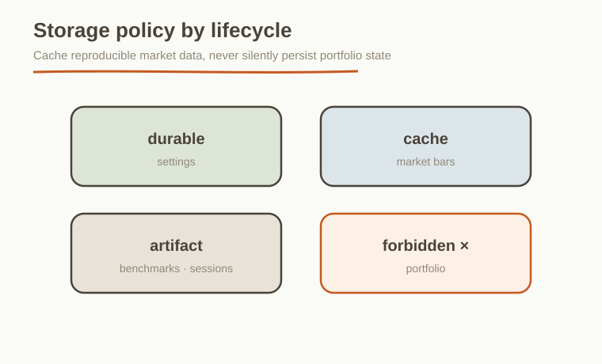

个人量化研究终端 — Agent 编排，人做决策

npm i -g whyj-quant && whyj
/data info --symbol 000001.SZ
# 离线可跑，bundle 示例数据
分析平安银行的动量因子和风险指标
# 需 API key，Agent 编排src/
index.ts # REPL / one-shot / doctor
app.tsx # Ink 根组件
commands/ # slash 解析 + handler
agent/ # pi Agent wrapper
tools/ # MCP(7) + COMPUTE(5)
services/ # 纯计算函数
data/ storage/ # MCP + .ohquant//factor analyze --symbol 000001.SZ → registry →
service，结果可复现。
/ 前缀 →
Agent.prompt() → LLM 选 Tool，灵活但需 key。
whyj -c "/backtest run" 或
whyj --json doctor，CI/脚本友好。

// quant-tools.ts
const cached = await loadCachedBars(symbol);
if (!cached) return err("DATA_NO_CACHE", ...);
const values = compute(factor, close, volume);
return ok(`Factor: momentum_20
Latest: +0.0432 Percentile: 78%`);
// session.ts
new Agent({
tools: [...MCP_TOOLS, ...COMPUTE_TOOLS],
toolExecution: "sequential",
transformContext: (msgs) =>
estimateTokens(msgs) >= 111616
? compactMessages(msgs) : msgs,
});